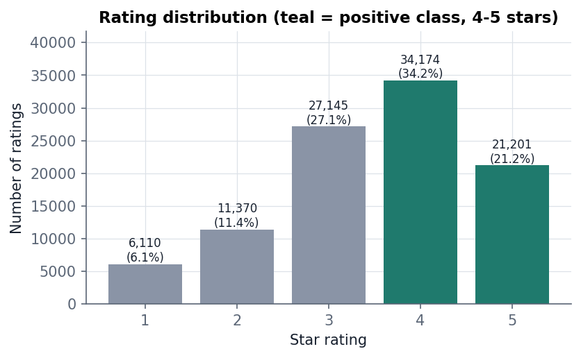
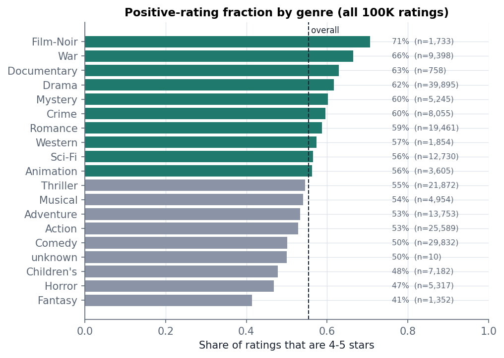
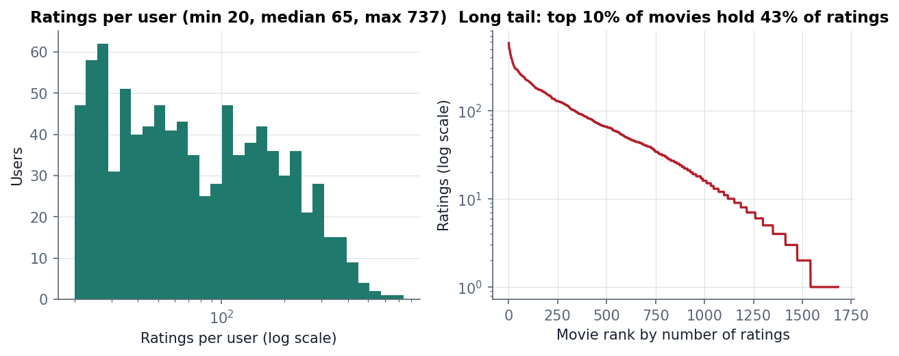
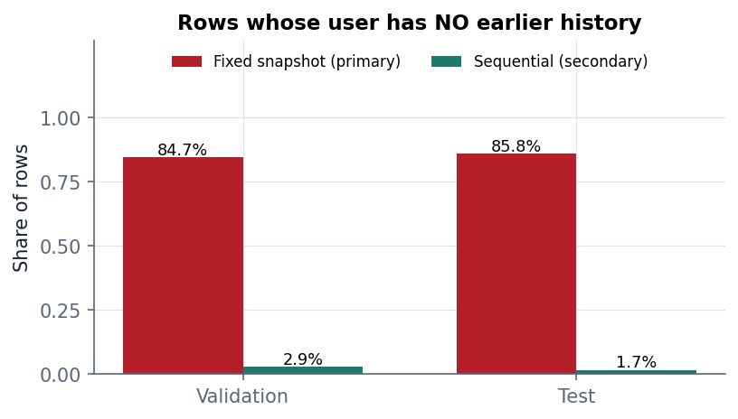
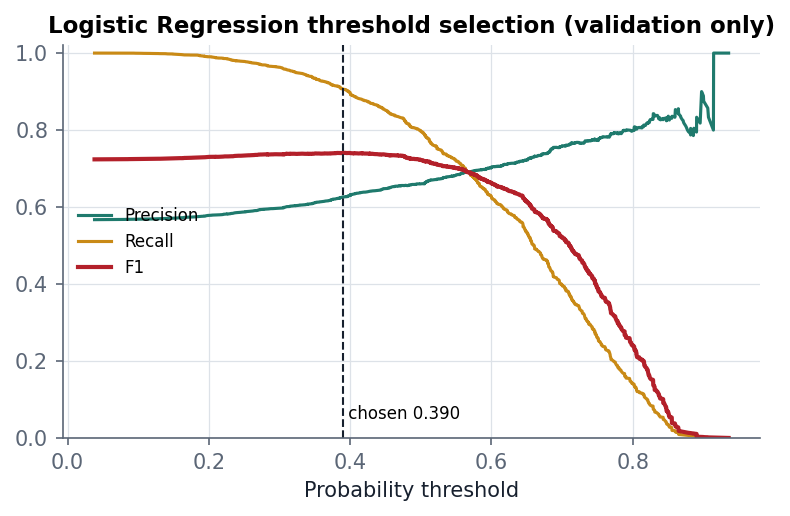
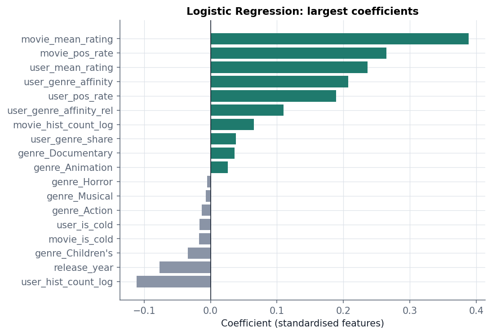
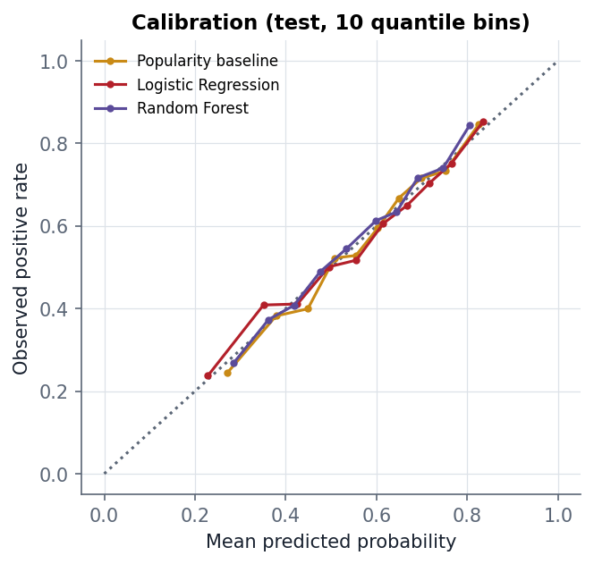

Project question
Given a user’s past movie ratings and a candidate movie, predict whether the user will give that movie a positive rating, then use the prediction to rank movies for recommendation.
| One row | One user–movie interaction: a user rated a movie at a particular time. |
| Target | 1 if the rating is 4 or 5 stars, 0 if it is 1, 2 or 3 stars. Fixed before any model was trained. |
| Prediction time | When a recommendation is generated, before the user has rated the candidate. |
| Allowed inputs | The user’s earlier ratings, the candidate’s genres and release year, and movie statistics from the training period only. |
| Output | A probability for each user–movie pair, and a ranked list of candidate movies. |
A rating of 1–3 is treated as “not positive” for this experiment. It does not prove the user disliked the movie. A movie the user never rated is unknown and is never used as a negative example. The model estimates recorded rating behaviour, not anyone’s actual feelings.
In scope: rating-based prediction, genre features, user-history summaries, model comparison, offline evaluation and this static demonstration. Out of scope: real user accounts, live recommendations, scraping streaming services, and causal claims.
Data
MovieLens 100K from GroupLens Research: ratings by users on movies, collected between and . The archive was checked against the MD5 checksum GroupLens publishes, and the row counts match its README exactly.
| File | Used for |
|---|---|
u.data | User ID, movie ID, rating (1–5), Unix timestamp. The main interaction table. |
u.item | Title, release date and 19 genre flags. Pipe-separated and Latin-1 encoded, although the README says tab-separated. |
u.user | Age, gender, occupation, zip code. Not used: demographic attributes are unnecessary for this question and sensitive. |
Access and responsible use
The GroupLens licence allows research use but not redistribution, so the repository contains no MovieLens files and no row-level copy of the ratings. src/load_data.py downloads the archive from GroupLens and checks its checksum. This site shows aggregate results and a few examples identified only by the dataset’s anonymous user numbers. The demographic file is not used at all.
Data-quality checks
Duplicate titles are separate movie IDs in the catalogue; they were kept as given.

The positive class (4–5 stars) is of all ratings, so always predicting “positive” is already right more than half the time.

Positive rates vary by genre; counts are shown so small genres are not over-read.

Every user has at least ratings (median ). Movies follow a long tail: the top 10% of movies receive of ratings, and movies have fewer than five. The rating matrix is empty.
Code and details: src/load_data.py, notebooks/01_data_exploration.ipynb
Preprocessing
- Load the files with column names from the README; join ratings to movies on movie ID (every ID matched).
- Check types, missing values, duplicates, rating range and timestamps (table above).
- Create the target: rating ≥ 4 → 1, rating ≤ 3 → 0.
- Split by time before computing any feature or fitting anything.
- Build user-history and movie features without using the row’s own rating or any later rating.
- Fit the imputer, scaler and model inside a scikit-learn
Pipelineon training rows only.
Chronological split
Ratings are sorted by timestamp and cut at timestamps, not row positions, so no training rating is later than any validation rating even when several ratings share a second.
Weekly rating counts. Activity is bursty: users typically join, rate dozens of movies in one session, and leave.
Features for one user–candidate pair
| Feature | How it is built |
|---|---|
| User history count | log(1 + number of earlier ratings), plus a cold-start flag when it is zero. |
| User mean rating, positive rate | From earlier ratings only, shrunk toward the training-period global value (5 pseudo-ratings). |
| User genre affinity | For each of the candidate’s genres, the user’s earlier positive rate in that genre (shrunk toward the user’s overall rate, 3 pseudo-ratings), averaged. Also the affinity relative to the user’s base rate, and the share of the user’s history in those genres. |
| Movie mean rating, positive rate, count | Training-period ratings of the candidate only, shrunk with 10 pseudo-ratings; cold-start flag for movies with none. |
| Candidate metadata | 19 genre indicators and release year (one missing year imputed with the training median). |
Key decisions and why
| Decision | Alternative considered | Why this choice |
|---|---|---|
| Positive = 4–5 stars | Positive = 3–5, or predict the star value | Matches the guide and gives a clear yes/no recommendation. 3 is ambiguous, so a sensitivity run drops it. |
| Split by time | Random 80/10/10 split | A random split lets the model learn from ratings made after the ones it predicts. Recommenders only ever predict forward. |
| Cut at timestamps | Cut at row positions | Many ratings share a second; cutting at a timestamp keeps every training rating earlier than every validation rating. |
| Strictly-earlier history for training rows | One profile per user from all training data | A single profile would include the row’s own rating. Shown below: that version looks better in training and is worse on validation. |
| Shrink averages toward the global rate | Raw averages | A movie with two 5-star ratings would otherwise outrank one with 200 ratings at 90% positive. Strengths (10, 5, 3 pseudo-ratings) were fixed before modelling, not tuned. |
| No demographics | Use age, gender, occupation | Not needed for the question, sensitive, and the guide advises against them. |
| PR-AUC as main metric | Accuracy | 56% of ratings are positive, so accuracy rewards “always yes”. PR-AUC is threshold-free and focuses on the positive class. |
| Threshold that maximises validation F1 | Fixed 0.5 | Chosen without touching the test set; the slider in Results shows the trade-off. |
| Logistic Regression as final model | Random Forest | Equal accuracy, interpretable coefficients and calibrated probabilities. |
| Add a sequential protocol | Report the fixed snapshot only | 86% of test rows have users with no training history, so the fixed snapshot alone cannot show whether personalisation helps users with history. |
Leakage controls
Training rows see only ratings with a strictly earlier timestamp: the row’s own rating and anything rated in the same second are excluded. Validation and test rows use a snapshot of the training period frozen at the cutoff. Automated tests recompute 300 random rows of each kind with slow, obvious loops and confirm the vectorised features match.
- Split by time before fitting any learned preprocessing.
- No candidate rating, future rating, or statistic derived from either is an input.
- Smoothing priors and imputation values come from the training period only.
- Hyperparameters and thresholds were chosen on validation; the test split was scored once by the final script.
- All methods are scored on the same validation and test rows.
Code and details: src/preprocessing.py, src/features.py, tests/test_leakage.py, notebooks/02_features_and_split.ipynb
Baseline and methods
| Method | What it does | Why |
|---|---|---|
| Majority baseline | Predicts the most common training class (positive) for every pair. | Exposes class imbalance; any useful model must beat it. |
| Popularity baseline | Scores each movie by its smoothed training-period positive-rating fraction. Every user gets the same order. | The non-personalised recommender that personalisation has to beat. |
| Logistic Regression | Weighted sum of the standardised pair features passed through a sigmoid. C tuned on validation. | Interpretable, fast, and gives calibrated probabilities. Primary model. |
| Random Forest | 300 trees; minimum leaf size tuned on validation. | Tests whether non-linear interactions help. |
| LR, movie features only | Logistic Regression with every user feature removed. | Ablation: isolates what the user-history features add. |
Genre preferences enter the model as features, so Logistic Regression acts as a personalised, content-based scorer. No separate similarity recommender was built.
Code and details: src/train.py, outputs/models/
Evaluation
The primary protocol is the guide’s fixed snapshot: features for validation and test rows come only from the training period, answering “given what was known at the training cutoff, how well can later ratings be predicted?”
Under the fixed snapshot, of test rows belong to users with no training-period ratings ( of test users). For those rows no personalisation is possible. So the report also runs the guide’s optional sequential protocol: when predicting a rating made at time t, every rating made before t is observable and nothing at or after t is. That leaves only of test rows without user history. The same trained models are used; only thresholds are re-chosen on sequential validation data.

Metrics
- Precision: of the pairs predicted positive, the share that were positive.
- Recall: of the positive ratings, the share the model caught.
- F1: harmonic mean of precision and recall.
- PR-AUC (average precision): precision–recall quality across all thresholds. Threshold-free, so it is the main comparison metric and the tuning criterion.
- Accuracy and the confusion matrix, always read next to the positive rate of the test set.
- Precision@k within each user: for users with at least 10 test ratings, rank the movies they rated and check how many of the top k were positive.
Tuning protocol
Each model was fit on training rows for every value in a small grid and scored by validation PR-AUC. The classification threshold for each model is the one that maximises F1 on validation. Logistic Regression picked C = ; Random Forest picked a minimum leaf size of .

Code and details: src/evaluate.py, src/run_pipeline.py
Results
Test-set scores. Thresholds were chosen on validation data. Switch the protocol to compare.
What the numbers say
Fixed snapshot (primary). Logistic Regression reaches PR-AUC against for the popularity baseline. A bootstrap over users puts the difference at with a 95% interval of , so the two cannot be told apart. The movie-only ablation scores the same as full LR. At the validation-chosen thresholds, popularity actually has the slightly higher F1 ( vs ). Every trained model beats the majority baseline’s PR-AUC of .
Sequential. When earlier ratings are visible, Logistic Regression reaches PR-AUC against (difference , 95% interval ) and F1 against . The movie-only ablation stays at , so the gain comes from the user features.
Random Forest is not reliably better than Logistic Regression under either protocol (difference fixed, sequential), so the simpler model is kept.
Paired cluster bootstrap: users are resampled with replacement (1,000 draws) and PR-AUC differences are recomputed on fixed predictions.
Precision–recall curves
Fixed snapshot, test set. The dotted line is the positive rate, which is what a random scorer would achieve.
Move the threshold
Who benefits from personalisation
Test PR-AUC grouped by how many ratings the user had before the prediction. Row counts are under each group.
Under the fixed snapshot, users with 200 or more training ratings get PR-AUC from Logistic Regression against from popularity, but that group is only of 10,000 test rows. For cold-start users the two are essentially the same, because without history the model can only use movie features. Across all rows from users with any training history, the movie-only model () actually edges out full LR (): a month-old profile is often not a good guide, and the gain is concentrated in heavy raters.
Ranking within each user
For test users with at least 10 test ratings, each user’s rated movies are ranked by score. A random order would give precision@5 of . Only rated movies have labels, so this ranks a candidate set the user chose to watch.
All methods put more positives at the top than random ordering. Within a single user, however, Logistic Regression does not beat popularity: under the sequential protocol popularity is slightly ahead at precision@5. The user features mainly shift a user’s overall level (harsh vs generous raters), which helps the pooled classification metrics but does little to reorder one user’s list. Genre affinity is the only per-movie user signal, and it is weak.
Two more checks
Leakage demonstration (validation only). A Logistic Regression trained on naive features that include each training row’s own rating scores PR-AUC on its own training data, which looks impressive, but only on validation, below the correct pipeline’s . Leakage makes a model look better in development and perform worse on new data.
Excluding 3-star ratings (1–2 vs 4–5, sensitivity analysis). Removing the ambiguous middle makes the task easier for everyone: Logistic Regression reaches PR-AUC and popularity , with a positive rate of . The ranking of methods does not change.

Movie quality dominates; the user’s rating tendency and genre affinity come next. Coefficients are on standardised features and features are correlated, so read them as rough importance, not causes.

Predicted probabilities track observed positive rates closely, so a score of 0.8 means roughly an 80% positive rate in this data.
Code and details: outputs/metrics.json, outputs/test_metrics.csv, notebooks/03_model_evaluation.ipynb
Errors
Test set, fixed snapshot, at each model’s validation-chosen threshold. Select a cell to see what that kind of error means here.
The thresholds that maximise F1 are low (about 0.4), so every model leans toward predicting “positive”: false positives far outnumber false negatives. Of Logistic Regression’s false positives, were 3-star ratings, the borderline case. Of its false negatives, were 4-star ratings.
Representative mistakes
The most confident errors of Logistic Regression on the test set, mixing users with and without history. User IDs are the dataset’s anonymous numbers.
False positives: predicted positive, rated 1–3.
False negatives: predicted not positive, rated 4–5.
The patterns are consistent with three explanations, though individual cases prove nothing. Popularity pull: acclaimed classics such as Casablanca get high scores for every user, and a cold-start user who gives them 3 stars becomes a false positive. Unpopular movies a user liked anyway: poorly rated movies get low scores, so the minority who enjoyed them are missed. Stale or unusual profiles: one false negative comes from a user with hundreds of ratings who is a harsh rater overall and is rating a movie with no training ratings, so every signal pointed down.
Logistic Regression error rate by genre on the test set (genres with at least 30 test ratings). Movies have several genres, so rows overlap.
Code and details: outputs/test_predictions.csv, REPORT.md
Limitations
- Cold start dominates the primary protocol. Most test users joined after the training cutoff, so the fixed-snapshot result mostly measures cold-start performance.
- Observed-rating bias. Users chose what to watch and rate. The data says nothing about movies they skipped, and unrated movies are unknown, not negative.
- Old data. Ratings are from 1997–98 on a small catalogue; tastes and audiences differ today.
- Subjective label. The 4–5 threshold is a project definition; a 3 may be mildly positive for some users.
- Popularity bias. Movies with many ratings have reliable statistics and dominate both the scores and the recommendation lists.
- Simple features. Only genres and release year describe a movie. There is no collaborative signal such as similar users or latent factors, which would likely help within-user ranking.
- Ranking evaluation. Only movies a user actually rated can be scored, so precision@k measures ordering within a self-selected set.
- One split. Results come from one chronological split; the bootstrap intervals cover user sampling but not other time periods.
- Prediction is not causation. The model finds patterns in past ratings; it does not explain why anyone likes a movie.
Conclusion
A user’s earlier ratings and a movie’s genres can predict a positive rating better than chance: every trained model clearly beats the majority baseline (test PR-AUC about vs ).
Whether personalisation beats popularity depends on whether the user has history. Under the guide’s fixed snapshot, most test users have none, and Logistic Regression is statistically indistinguishable from the popularity baseline. When earlier ratings are allowed to inform later predictions, Logistic Regression improves PR-AUC by about with an interval that excludes zero, and the movie-only ablation shows the improvement comes from the user features. The gain shows up in the pooled metrics rather than in reordering a single user’s list.
Logistic Regression is kept as the final model: it matches Random Forest, is well calibrated, and its coefficients can be explained. A collaborative-filtering signal is the most promising next step.
Reproduction
Python trains and evaluates everything offline. This page only reads the exported results file, data/results.js; no model runs in the browser.
git clone <repository URL> MovieMatch && cd MovieMatch
python -m venv .venv && source .venv/bin/activate
pip install -r requirements.txt
python -m src.load_data # downloads ml-100k.zip from GroupLens, checks MD5
python tests/test_leakage.py # split and leakage tests
python -m src.run_pipeline # full experiment, about 3 minutes
python -m src.make_report # regenerates REPORT.md from the results
jupyter notebook notebooks/ # 01 → 02 → 03
Exact split boundaries (UTC). Target rule: rating ≥ 4. Random seed 335. SHA-256 fingerprint of the split assignment: . src.run_pipeline prints the same value if you reproduced it exactly.
AI use
Project by Solanki Viraj (24110348). AI assistance was used for drafting and debugging code, designing leakage checks, and assisting with documentation. The code was run end to end, verified independently, and every number on this page is read from the pipeline output.
Credits
Data: F. Maxwell Harper and Joseph A. Konstan. 2015. The MovieLens Datasets: History and Context. ACM Transactions on Interactive Intelligent Systems 5(4), Article 19. GroupLens Research, University of Minnesota. This project is not endorsed by the University of Minnesota or GroupLens. Raw data is not redistributed here. Built with pandas, NumPy, scikit-learn and Matplotlib. Fonts: Plus Jakarta Sans and Inter (Google Fonts).